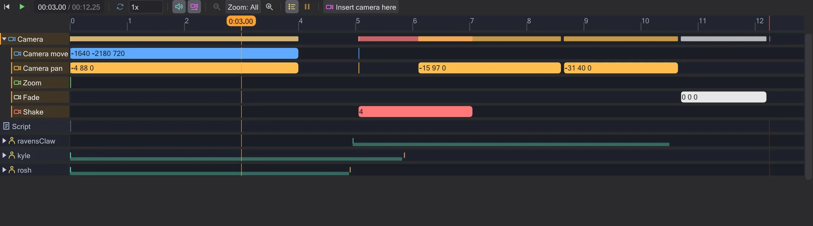

Timeline
The timeline plays the scene and shows when every command happens. Drag a block and the script changes with it.

Playing#
The play button (▶) under the map starts and stops. Click or drag on the ruler to set the time. The speed field slows the scene down (sound only plays at 1x), Loop repeats it. The wheel over the ruler zooms, Ctrl+wheel over the tracks too; All shows everything, the middle mouse button drags. Frames or seconds - the unit button switches.
Rows and categories#
The Camera row holds the camera commands (move, pan, zoom, fade). Below, every figure or mover that the script touches has its own row. Click the arrow at its name to open it: the commands are sorted into Movement, Animation, Look, Sound, State and Flow (waits, signals). Rows where nothing happens after the start are hidden; tick Idle tracks to show them.
The wait commands are hidden by default - they still place everything in time, and moving a block adjusts them. Waits shows them as blocks of their own.
Changing time by dragging#
Drag a block left or right and the wait before it changes - the command happens earlier or later, everything after it moves along. A camera block can be dragged at its end to change its duration. Walks and flights appear as bands at the bottom of a figure's row; drag them in time the same way, right-click a walk to switch between walking and running.
Clicking a block selects its line in the script, and the map jumps to that moment - timeline, script and map always show the same thing.
wait ends one game frame (50 ms) later than written, and a dowait waits for the task it names. When a time cannot be known (a waitsignal), the timeline says so instead of guessing.